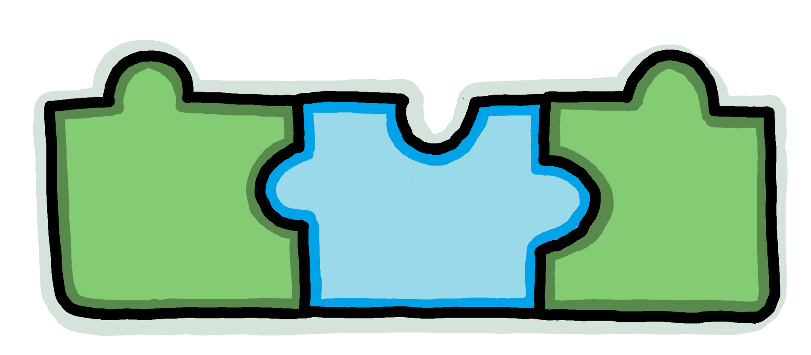

ARITHMÓS 1

Arithmós 1 és el primer secret que la Celila ha descobert. És un lloc per pràcticar les operacions senzilles i guanyar agilitat mental. Si vols descobrir més sobre aquest secret, fes clic a la imatge i explora el món d'Arithmós 1!
CONNECT BITS

Connect bits és una estratègia que té la Celila per organitzar objectes, que l'ajuda a identificar la quantitat més fàcilment. Vols descobrir-ho?